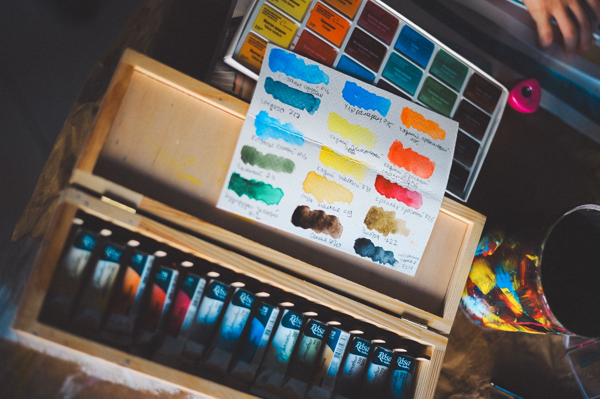
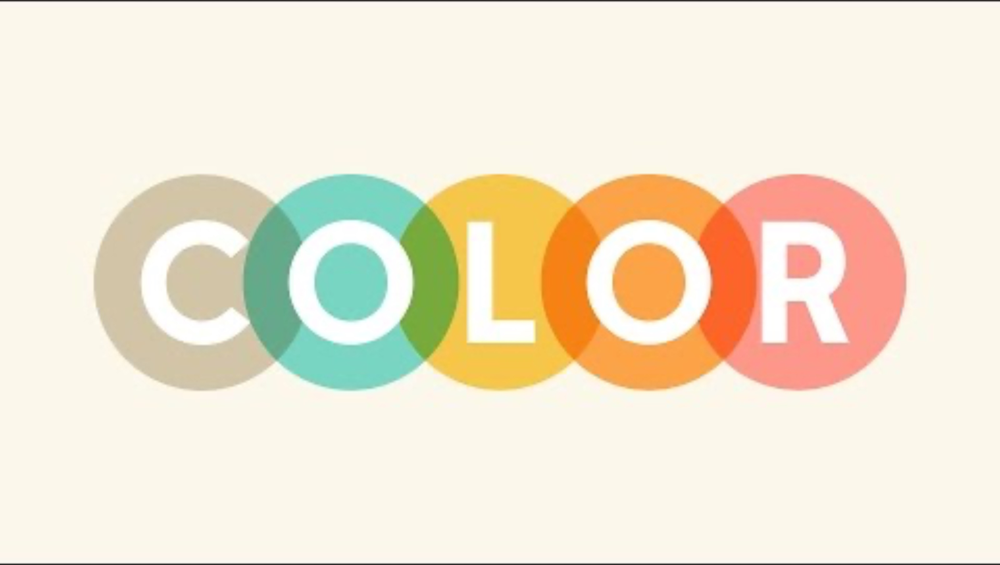
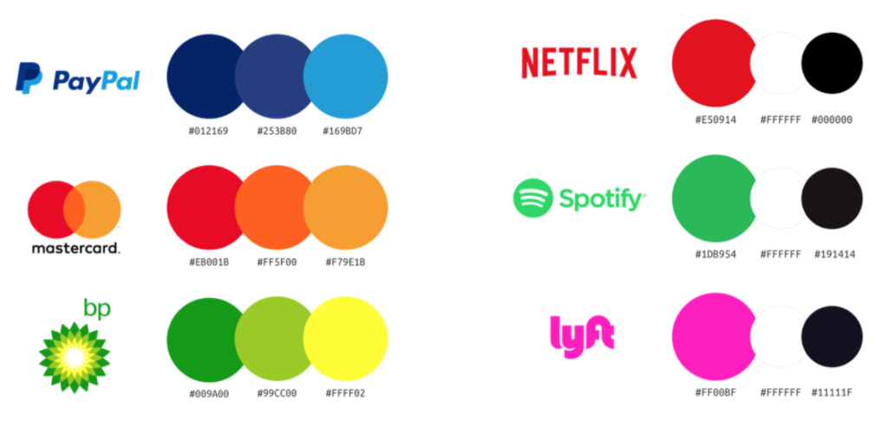
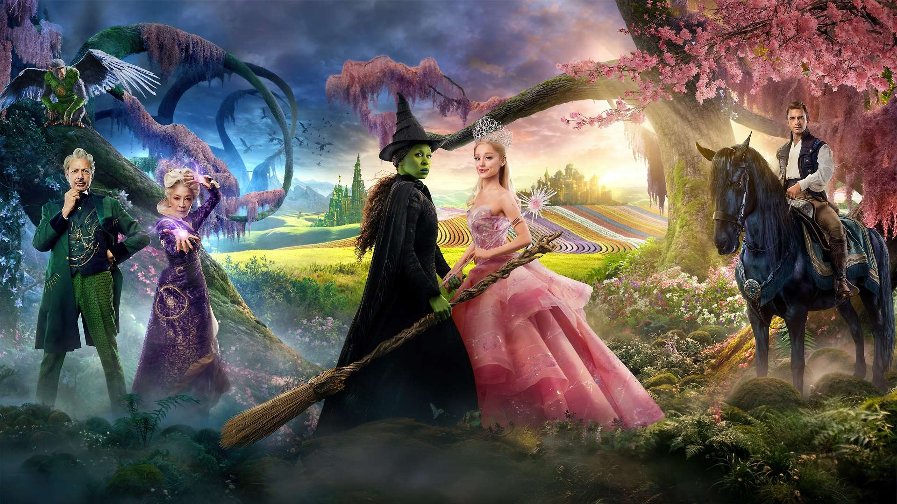
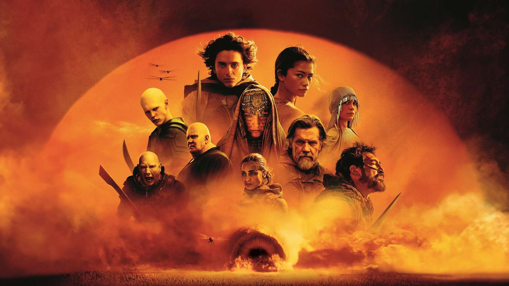
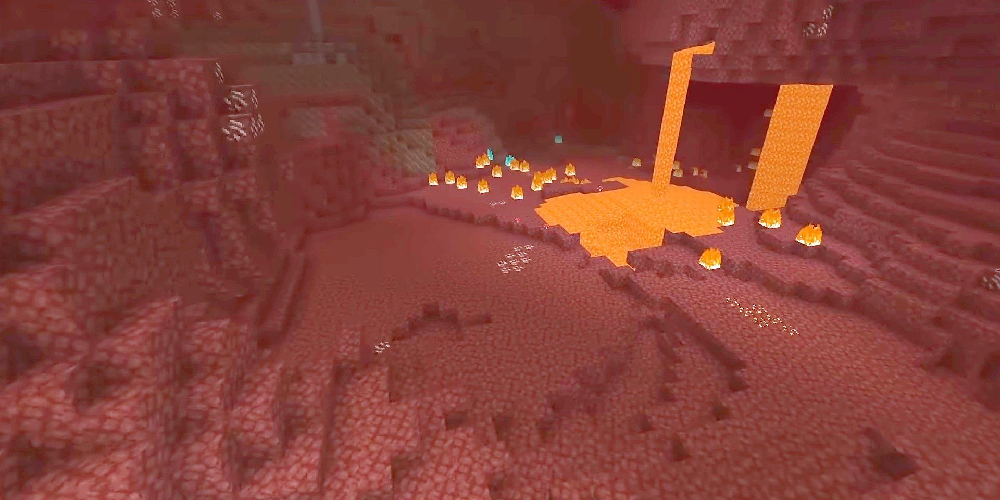
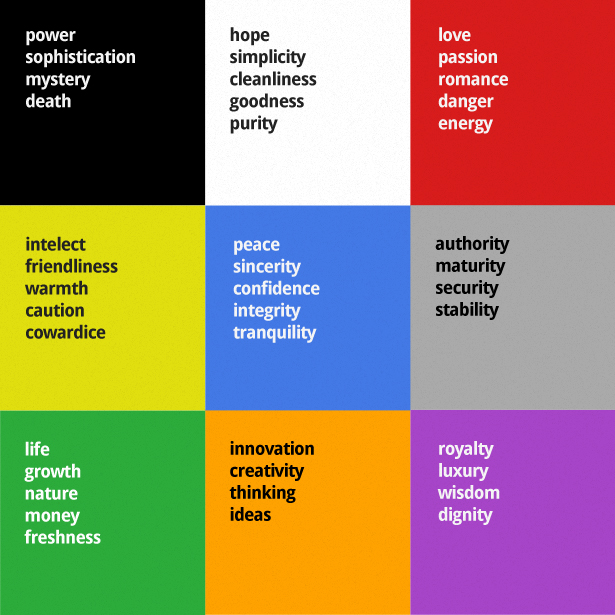

Design · P1 · GLR Media Creative
Kleurenleer
Les 1 — kleur als ontwerpbeslissing
Van kleurgevoel naar onderbouwd kleurgebruik.
Stelling
Kleur is geen decoratie.
Het is een ontwerpbeslissing met een boodschap —
en jij bepaalt die boodschap.
Eens of oneens? Noem een game, app of merk waar jij de kleur meteen herkent.
Afspraken
Zo werken we in dit lokaal
Drie afspraken zodat we gefocust kunnen ontwerpen.
Telefoon in de tas
Geen telefoons tijdens uitleg en opdrachten.
Niet eten of drinken
Alleen water in een afgesloten fles.
Meld het als je wegloopt
Laat even weten als je het lokaal verlaat.
Programma
Zo ziet de les eruit
Elke stap bouwt voort op de vorige: eerst snappen, dan doen.
Leer- en lesdoelen
Waar gaan we naartoe?
Uitleg
Kleur, sfeer en betekenis
Opdracht 1
Paletten uit films & games
Uitleg
Het kleurenwiel
Opdracht 2
Harmonieën maken in Figma
Opdracht 3
Kleur & vorm als taal
± 60 minuten · de opdrachten maak je individueel in Figma · opdracht 3 mag je afmaken tot het einde van de les.
Leerdoelen P1
Wat je in periode 1 leert
Je kiest en gebruikt basisvormen om de uitstraling, betekenis en duidelijkheid van een ontwerp te versterken.
Je kiest kleuren die passen bij een gewenst gevoel of sfeer en legt uit waarom.
Je kiest typografie die past bij een emotie of sfeer en legt uit waarom.
Je bedenkt verschillende ideëen, onderzoekt mogelijkheden en maakt een onderbouwd keuze.

Lesdoelen Kleurenleer
Aan het einde van deze les kun je …
Kleuren onderzoeken
Welke gevoelens en associaties roepen verschillende kleuren op?
Paletten combineren
Kleuren combineren tot paletten met een eigen sfeer of uitstraling.
Een palet kiezen
Een passend palet kiezen bij een gegeven gevoel, emotie of sfeer.
Je keuze uitleggen
Uitleggen waarom je kleuren passen bij het gewenste gevoel of de sfeer.
Voorkennis
Welke kleur hoort bij welk merk?
Bespreek met je buur: welk merk hoort bij elke kleur?
Samenvattend filmpje
Kleurenleer in het kort
Zet de ondertiteling (CC) op Dutch voor Nederlandse tekst.

Kleur & uitstraling
Kleur bepaalt hoe je ontwerp overkomt
Je voelt het eerder dan je het leest.
Sfeer
Kleur zet de toon: warm en uitnodigend, of koel en zakelijk.
Aandacht
Felle kleur trekt de blik; rustige kleur geeft ruimte aan de rest.
Merkidentiteit
Merken kiezen kleur strategisch
Vaak is één kleur al genoeg om een merk te herkennen.


Voorbeeld 1 · Film
Welk gevoel roepen deze kleuren op?
Bespreek met je buur: bij welke film hoort dit beeld?
Kleur in film
Film regisseert emotie met een kleurenpalet
De kleuren van een scène vertellen mee wat je moet voelen.
Elphaba — het groen
Glinda — het roze
Kleur als contrast
Groen en roze zijn elkaars tegenpool: dat botst en valt op.
Kleur als karakter
Elphaba (groen) en Glinda (roze) herken je direct aan hun kleur.

Voorbeeld 2 · Film
Welk gevoel roepen deze kleuren op?
Bespreek met je buur: bij welke film hoort dit beeld?
Kleur in film · 2
Elk genre heeft zijn eigen kleurbeeld
Dune: Part Two (2024) heeft twee werelden — elk met een eigen palet.
Arrakis — de woestijn
Giedi Prime — de Harkonnen
Dezelfde film
Twee werelden, twee kleuren — en dus twee gevoelens.
Kleur als genre-taal
Warm zand = avontuur; kil grijs = dreiging en macht.

Voorbeeld 3 · Game
Welk gevoel roepen deze kleuren op?
Bespreek met je buur: bij welke game hoort dit beeld?
Kleur in games
Games sturen je sfeer met kleur
Van de helse Nether tot een koud sneeuwlandschap — kleur maakt de wereld.
Minecraft — The Nether
Minecraft — sneeuw & ijs
Zelfde spel, andere sfeer
Minecraft voelt warm in de Nether en koud in de sneeuw.
Kleur stuurt je gevoel
Rood en oranje = spanning; blauw en wit = ontspanning.
Opdracht 1 · 20 minuten
Kleurenpaletten uit films & games
Verzamel minstens 5 voorbeelden van games of films die je goed vindt en maak per game of film een kleurenpalet.
Zoek een herkenbaar beeld uit een gameplay of film en geef per beeld de dominante kleuren aan.
Individueel. Zie opdracht 1 in de lesstof.
Uitleg
Het kleurenwiel: kleuren combineren
Zo combineer je kleuren die samen werken — de basis voor opdracht 2.
Complementair
Tegenover elkaar — veel contrast.
Split-complementair
Eén kleur plus de buren van zijn tegenpool.
Analoog
Buren naast elkaar — rustig en harmonieus.
Triadisch
Drie kleuren, gelijk verdeeld — levendig.
Tetradisch
Twee complementaire paren — rijk en gevarieerd.
Vierkant
Vier kleuren, gelijke afstand — evenwichtig.
Monochromatisch
Eén tint in verschillende helderheden — heel rustig.
Opdracht 2 · 30 minuten
Vier kleurcombinaties in Figma
Gebruik het kleurenwiel om vier combinaties te maken.
Veel contrast
Maak een combinatie die direct opvalt.
Warm
Maak een combinatie die warmte uitstraalt.
Rust en harmonie
Maak een combinatie die rustig en prettig aanvoelt.
Koel
Maak een combinatie met een koele uitstraling.

Kleur & betekenis
Kleuren en emoties
Gevoel
Van blijdschap tot onrust, van ontspanning tot enthousiasme.
Informatie zonder woorden
Rood en blauw op een kraan: iedereen snapt het.
Waarschuwing
Een verkeerslicht stuurt je gedrag met alleen kleur.
Gedrag
Geel geeft energie; in een rode ruimte lopen emoties sneller op.
Opdracht 3 · tot het einde van de les
Kleur en vorm als taal
Gebruik kleur en vorm om een woord te verbeelden.
Beeld een woord uit. Je woord hangt af van de laatste twee cijfers van je studentnummer — zie de woordenlijst in lesstof › kleurenleer › opdracht2.pdf.
Maak in Figma een .svg-bestand met jouw woord in een passend lettertype. Zet kleur én vorm in om het woord uit te beelden.
Tot het einde van de les.
InleverenExporteer je ontwerp vanuit Figma als een .svg bestand.
Klaar?
Extra uitdaging: spelen met code
Klaar met je opdrachten? Ga dan experimenteren met kleur en vorm in code.
- Gebruik code om te spelen met kleuren en vormen.
- Neem het voorbeeld uit de lesstof (opdracht 3) en maak je eigen versie.
- Maak een mapje “kleuren” en zet daar al je codebestanden in — zie het voorbeeld in design1/kleurenleer.
- Tijd: tot het einde van de les.
Afsluiting
Even terugkijken
- Waarom is kleur belangrijk in design?
- Hoe kan kleur een emotie overbrengen?
- Hoe kunnen kleuren elkaar versterken of juist tegenwerken?